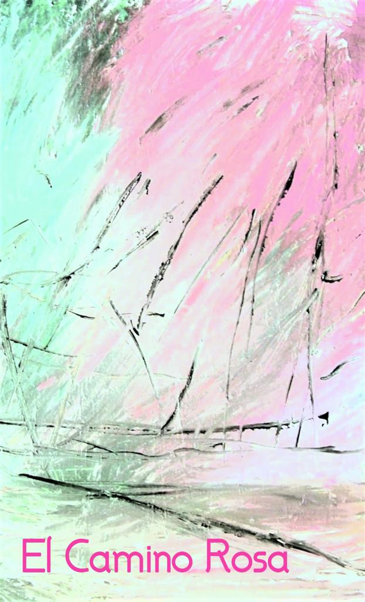

🌵
🌵
🌞 El Camino Rosa - שירון עברי 🌴
בחר שיר
1. Los Quatro Elementos - ארבעת האלמנטים
2. Alas Poderosas - כנפיים חזקות
3. Aguilá Aguilé - נשר נשר
4. Agua Vital - מים חיוניים
5. Heart’s Mystery - מסתורין הלב
6. Hubo un Tiempo Muy Lejano - היה זמן רחוק מאוד
7. Pajaro Viejo - ציפור זקנה
8. Hubo un Tiempo - היה זמן
9. Flor Das Aguas - פרח המים
10. Viejo Tambor - תוף זקן
11. Oso Blanco - דוב לבן
12. Unidas Por Plumas - מאוחדות על ידי נוצות
13. Ninawa Pai Da Mata - נינאווה פאי דה מאטה
14. Arare el Aire - אחרוש את האוויר
15. Mujer de la Tierra - אישה מהאדמה
16. Oh Mi Madre Tierra - הו אמא אדמה שלי
17. Águila y Cóndor - נשר וקונדור
18. Agua Del Amor - מים של אהבה
19. Tren del Cielo - רכבת השמיים
20. Cuatro Aguilas - ארבעה נשרים
21. Cura da Floresta - רפואת היער
22. Abuelito y Abuelita - סבא וסבתא
23. איך אוכל להמשיך לישון
24. El Camino Rosa - הדרך הוורודה
25. La Casa de mis Abuelos - הבית של סבא וסבתא שלי
27. Mensageiro Beija-Flor - שליח יונק הדבש
28. Duas Ventarolas - שתי שבשבות
29. A Energia da Floresta - האנרגיה של היער
30. Pinta Viva - צבע חי
31. Tapuya - טאפויה
32. Fenix - עוף החול
33. Sagrado Femenino - הנשי הקדוש
34. Madre Tierra Temazcal - אמא אדמה טמאזקל
35. Canto Curador - שיר מרפא
36. שיר בעברית (ללא שם)
37. אם בתוך האש
38. Huni Kuin Kaxinawa - הוני קווין קשינאווה
39. Forca da Floresta - כוח היער
40. Na Rene Wakame e - נה רנה וואקמה א
41. Cura para Nos Curar - ריפוי לנו
42. Esfera Azul - כדור כחול
43. Xanu Yara - שנו יארה
44. Canta Pajarito - שיר לציפור
45. Agua No Mas Palabras - מים, לא עוד מילים
46. Huehueteotl - הואואטאוטל
47. Aguas Claras - מים צלולים
48. Pachamama y Pachakamaq - פצ'מאמא ופצ'קאמאק
49. Om Nama Shivaya - אום נמה שיוואיה
50. Txana Ikakuru - טקסנה איקאקורו
51. Ojos - עיניים
52. Caminante Sabio - המטייל החכם
53. Abuelos Milenarios - סבים קדמונים
54. עבדי זמן
55. שלח לי מלאך
56. נשמת כל חי
57. אלון בסלע
58. שירו של שפשף
59. פרפרי הקצב
60. עוד תראי את הדרך
61. כל כולי אור
62. אם
63. Aguita Camino Rojo - מים בדרך האדומה
64. La Tierra del Misterio - אדמת המסתורין
65. Abuelito Fuego - סבא אש
66. Família Ywanawa - משפחת יוואנאווה
67. Espiritu del Agua - רוח המים
68. Bella Flor - פרח יפה
69. Agüita Camino Rojo - מים בדרך האדומה
70. Sagrada Familia - משפחה קדושה
71. אחותי משבט אינדיאני
72. El Alegre Pescador - הדייג השמח